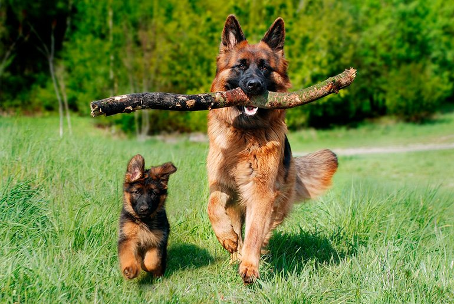

Los perros nacen sordos y ciegos. La nariz de los perros puede llegar a tener hasta 300 millones de receptores olfativos. Las papilas gustativas de los perros varían de 1,700 a 2,000 versus las casi 10,000 papilas gustativas que tenemos los humanos.!
El perro es un mamífero doméstico que pertenece al grupo de los carnívoros. Es una subespecie del lobo gris, a quien se lo considera como su antepasado, y tiene semejanzas con los zorros y los chacales.
Algunas de las razas mas famosas
¿RAZA?: Una raza de perro está representada por un número suficiente de individuos que transfieren de manera estable sus características específicas a través de generaciones. Los perros de la misma raza tienen características similares en apariencia y comportamiento, sobre todo porque vienen de un sistema selecto de antepasados que tenían las mismas características. Los perros de una raza específica o raza verdadera, producen animales muy similares a los padres
Labradores

El labrador retriever (conocido también como cobrador de Labrador1 o perdiguero de Labrador) es una raza canina originaria de Terranova, en la actual Canadá. Es una de las razas más populares del mundo por la cantidad de ejemplares registrados.
Su excepcional afabilidad, gentileza, inteligencia, nobleza, energía y bondad, hacen que los labradores sean generalmente considerados como buenos compañeros para personas de todas las edades, así como fiables perros trabajadores, comúnmente formando parte de las brigadas caninas de la policía en operativos antidroga, antiexplosivos, de búsqueda y rescate, entre otros. Con adiestramiento, el labrador es una de las razas de perro más dócil, obediente y talentosa que existen
Columnam 2
El pastor alemán (en alemán: Deutscher Schäferhund) es una raza de perro pastor originaria de Alemania.La raza es relativamente nueva, ya que su origen se remonta a 1899.Forman parte del grupo de pastoreo, ya que fueron perros desarrollados originalmente para reunir y vigilar ganado
Gracias a su fuerza, inteligencia,capacidad de entrenamiento y obediencia,los pastores alemanes de todo el mundo son a menudo la raza preferida para muchos otros tipos de trabajo, como son: perro policía, perro militar, perro guardián, guía de ciegos, animal de rescate, y otros, según el uso que le den las fuerzas y cuerpos de seguridad y el ejército. En muchos países incluso cuentan con unidades específicas denominadas K-9
Columna 3

El dóberman (en idioma alemán y oficialmente dobermann) es una raza canina originaria de Alemania. Esta raza debe su nombre al alemán Karl Dobermann, que, a finales del siglo xix, toma la iniciativa de crear una nueva raza de perro que sirviera eficazmente a su difícil trabajo como recaudador de impuestos
Para conseguir el nacimiento de esta nueva raza, mediante cruces de otras razas caninas como el Rottweiler, el Beauceron, el Weimaraner, el Manchester terrier, o el Pinscher, entre otros. La principal función de esta raza en sus orígenes fue la de proteger a su criador frente a potenciales asaltantes interesados en la recaudación de los impuestos que solía portar. Actualmente sus principales funciones son: perro policía, perro militar, perro de defensa y seguridad, perro guardián, entre otras funciones, según el uso que le den las fuerzas y cuerpos de